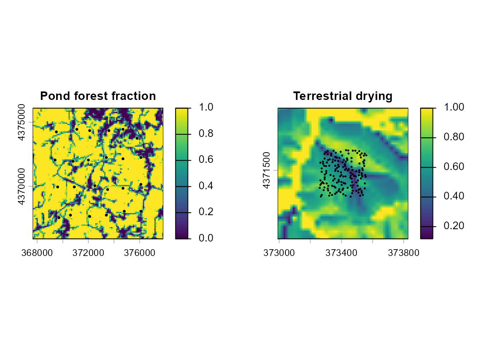

12. How the Salamander Example Data Were Generated
Bill Peterman
Source:vignettes/v12-data-generation.Rmd
v12-data-generation.RmdGoal. Understand what is real, what was simulated, and how landscapes, animals, and mutations became the datasets used throughout these guides. You can analyze the bundled data without running SLiM or downloading rasters.
What is real and what is simulated
The guides use three kinds of data: a real landscape, genotypes simulated in SLiM on that landscape, and covariance matrices drawn directly from a statistical model. Both salamander examples use real southeastern Ohio terrain and land cover, but the animals, genetic data, pond locations, and drying index are simulated.
| Example | Biological question | Sampling and markers | Start here |
|---|---|---|---|
Forest ponds, ohio_ponds
|
Does forest around routes help explain genetic differences among breeding ponds? | 24 ponds, 20 retained diploids per pond, 2,500 SNPs and 24 microsatellites | Getting Started |
Terrestrial salamanders, individual_salamanders
|
Can faster, straighter movement in moderately dry terrain produce nonlinear IBR? | 160 adults per scenario, nested 500/1,000/2,500 SNPs and 24 matched microsatellites | Individual genotypes |
| Statistical examples | Can a method recover a specified effect when its data model is correct? | Covariance matrices drawn directly from specified models | Study design, categorical covariates, and IBE |
The statistical examples reuse the landscape but contain no salamander genotypes. They illustrate a method without testing whether its specified relationship describes salamander biology.
Prepare the real landscape
Elevation comes from USGS 3DEP, and land cover from the 2023 Annual NLCD product, Collection 1.0. All inputs share the NAD83 / UTM zone 17N projection (EPSG:26917), so distances are in meters. The installed provenance files listed below record source requests and file hashes.
The pond analysis retains a 10.2 by 10.2 km landscape at 100 m resolution. Forest fraction is the proportion of finer land-cover cells classified as deciduous, evergreen, or mixed forest, or woody wetlands. The data keep elevation and slope as alternative predictors, although only forest controls pond exchange in the simulation. A surrounding input area reduces edge effects in forest context.
The terrestrial example uses an 840 by 840 m part of the same landscape, with a 300 by 300 m sampling core and a 270 m buffer. Its forest mask uses deciduous, evergreen, and mixed forest. Drying is a hypothetical index:
where is the scaled terrain-wetness quantity and is scaled exposure. Nonforest native cells receive . These are assumed values, not measured water loss. The symbol is local to this guide; the other guides use for squared genetic distance. The 10 m analysis grid interpolates the native 30 m information so nearby individuals can occupy separate graph cells.
library(terradish)
library(terra)
#> terra 1.9.34
data(ohio_ponds)
data(individual_salamanders)
pond_landscape <- unwrap(ohio_ponds$covariates)
files <- system.file("extdata", "individual-salamanders",
package = "terradish", mustWork = TRUE)
drying <- rast(file.path(files, "environment_10m.tif"))
local({
old <- par(mfrow = c(1, 2), mar = c(3, 3, 2, 3))
on.exit(par(old))
plot(pond_landscape[["forest"]], main = "Pond forest fraction", cex.main = 0.9)
points(ohio_ponds$ponds[c("x", "y")], pch = 20, cex = 0.5)
plot(drying[[1]], main = "Terrestrial drying", cex.main = 0.9)
samples <- individual_salamanders$data$compensatory_500$samples
points(samples[c("easting", "northing")], pch = 20, cex = 0.3)
})
Real landscape inputs for the two simulated examples: hypothetical ponds on the forest-fraction map (left) and the assumed terrestrial drying index (right).
How to read the maps. The examples use different extents and sampling units. Points mark sampled ponds or adults, and every cell between them, including nonforest cells, remains available to the graph.
Generate the pond history in SLiM
All 24 hypothetical ponds lie in native forest. Screening required at least 90% forest within 100 m, at least 60% within 300 m, slope no greater than 12 degrees, spacing of at least 600 m, and a 1,500 m domain-edge margin. These were simulation design rules, not habitat thresholds estimated from data.
A Gaussian kernel of standard deviation 500 m smooths forest fraction. The generating cell conductance is
Here is smoothed forest fraction on its original 0-to-1 scale. Eliminating the intervening nodes of an eight-neighbor cell graph gives an exchange network among ponds that retains the graph’s effective connections. Total exchange probability per pond is at most 0.025, so most reproductive events use local parents, with a small long-distance tail. The model records reproductive exchange between ponds, not travel tracks.
SLiM 5.2 ran a neutral model for 1,200 nonoverlapping generations.
Pond size varies around a target of 120 diploids rather than staying
fixed as in a Wright-Fisher model. One parent can come from the exchange
distribution, and the other is local. Hydroperiod is a hypothetical pond
attribute with no genetic effect in this history, which makes it a
negative control for isolation by environment (IBE). The author
specified the packaged history (seed 79101) before fitting any model.
Development also examined other histories and smaller SNP panels, and
the bundled history was not chosen for the strongest fit (see
?ohio_ponds).
Generate the terrestrial history in SLiM
This model follows individuals annually for 500 years, with local mating, crowding, repeated breeding, movement, and survival. Two scenarios share parameter values and seed 90401.
The installed files record part of this design: the base seed,
ancestry settings, and second-assay plan
(provenance/validation_PLAN.json), the sampling roster
rules (provenance/SAMPLING_PROTOCOL.md), and the landscape
sources (provenance/landscape_download_manifest.json), all
under
system.file("extdata", "individual-salamanders", package = "terradish").
The package does not ship the SLiM script. The demographic and movement
values in the two tables below, the drying-index weights above, and the
exposure hazard therefore describe the simulation as designed, and you
cannot check them against an installed file. The control fixes the
drying input to the movement functions at 0.5, while the compensatory
scenario uses local drying. The scenarios develop different individuals
and pedigrees, so their animals are not matched.
| Component | Assumed value |
|---|---|
| Maturity and maximum age | Females mature at 5 years, males at 4; maximum 20 years for both sexes |
| Annual survival after first winter | Age 1: 0.65; age 2: 0.75; age 3: 0.80; immature age-4 female: 0.82; mature: 0.85 |
| Female breeding | Probability 0.5 each mature year; clutch is 10 + Binomial(10, 0.6) |
| Hatch and first-winter survival | Hatch probability 0.8; first winter is , where is local density |
| Forest density target | 0.05 animals aged 1+ per square meter |
| Mating and competition | Gaussian distance SD 3 m, cutoff 9 m; competition SD 10 m, cutoff 30 m |
| Natal position | Displacement SD 2 m, maximum 6 m; forest redraws, with maternal-location fallback |
| Annual movement departure | Age 1: 0.30; older immature: 0.03; mature: 0.01 |
| Movement event | At most 60 one-minute steps; reflection at the outer domain boundary |
Movement functions interpolate linearly between the following drying values:
| Drying | Speed (m/min) | Heading persistence | Settlement probability per step in forest |
|---|---|---|---|
| 0 | 1 | 0.2 | 0.15 |
| 0.25 | 1 | 0.2 | 0.15 |
| 0.65 | 3 | 0.9 | 0.02 |
| 1 | 0.4 | 0.9 | 0.02 |
Heading persistence is the mean cosine of the turning angle, so values near one produce straighter paths. Exposure hazard per minute is , evaluated at four points along each step. Settlement requires forest, and a surviving animal still outside forest at the 60-minute limit dies. Each movement event represents an episodic dispersal opportunity, not all daily foraging or surface activity.
The resulting hypothesis is that quicker, straighter travel can compensate for moderate drying, while very dry terrain remains dangerous. It was motivated by the interpretation in Peterman et al. (2014), not estimated from that study. Because movement, survival, settlement, and later reproduction jointly determine realized gene flow, fitted conductance is not identical to the speed function used here.
Select animals before examining genotypes
Pond sampling began with 30 animals per pond, adding captures where needed to retain 20 after screening out known immediate pedigree relatives within each pond. The saved history contains 780 raw captures and 480 retained animals.
Terrestrial sampling drew 160 adults alive in year 500 from sixteen 75 m strata, 10 per stratum, with 40 in each 150 m quadrant. Every adult is at least five years old, at least 10 m from the others, and in a distinct 10 m cell. The roster excludes any pair with a direct or shared recorded parent or grandparent.
table(ohio_ponds$samples$pond)
#>
#> P01 P02 P03 P04 P05 P06 P07 P08 P09 P10 P11 P12 P13 P14 P15 P16 P17 P18 P19 P20
#> 20 20 20 20 20 20 20 20 20 20 20 20 20 20 20 20 20 20 20 20
#> P21 P22 P23 P24
#> 20 20 20 20
lapply(individual_salamanders$data, function(x) table(x$samples$stratum))
#> $compensatory_500
#>
#> 1 2 3 4 5 6 7 8 9 10 11 12 13 14 15 16
#> 10 10 10 10 10 10 10 10 10 10 10 10 10 10 10 10
#>
#> $control_500
#>
#> 1 2 3 4 5 6 7 8 9 10 11 12 13 14 15 16
#> 10 10 10 10 10 10 10 10 10 10 10 10 10 10 10 10How to read the counts. Each pond has 20 animals, and each terrestrial scenario has 10 adults in each of 16 strata. Both marker types use exactly these animals. Kin screening used the recorded pedigree before genotypes were generated, and in both examples more distant shared ancestry can remain. With field data, relatedness must itself be estimated.
Add ancestry and matched markers
SLiM supplies the recent ecological history, and tree-sequence tools then add ancestry and mutations. A tree sequence stores how sampled genomes share ancestors along a chromosome, so several marker panels can come from one history without resimulating the animals.
For ponds, the simulated chromosome is 50 Mb, with recombination rate per base per generation. Older ancestry is completed using population size 120 and half the forward exchange matrix as a backward-time approximation, an assumption that does not prove equilibrium. The seeds for completing older ancestry (recapitation), SNP mutation, and microsatellite mutation are 79102, 79103, and 79104.
For terrestrial animals, msprime reconstructs inheritance through the saved SLiM parents for 20 synthetic 2.5 Mb blocks. Recombination is per base per meiosis. Earlier ancestry assumes a randomly mating population with effective size 5,000. Calendar years are converted to approximate generations using mean parental age among recruits in years 401-500, a constant clock that simplifies overlapping generations. Genomes are those inherited at birth, with no somatic mutation added before sampling.
| Marker choice | Pond data | Terrestrial data |
|---|---|---|
| SNP mutation model | Jukes-Cantor (equal rates among bases), per base per generation | Same rate per approximate generation |
| SNP selection | Biallelic, pooled minor-allele frequency at least 0.05; candidates at least 10 kb apart; 2,500 position-spread loci | Same selection rules within blocks; nested 500/1,000/2,500 panels |
| Microsatellites | 24 stepwise-mutation loci; rate 0.001 per locus per generation | 24 predetermined loci, including monomorphic ones; rate 0.0001 |
| Repeat states | Initial state 20, bounds 5 to 45 | Initial state 20, bounds 5 to 45 |
The panels share sampled animals and ancestry within each scenario, but their mutation processes differ, and SNP spacing does not make all loci independent. The panels omit restriction sites, read depth, missing calls, and genotyping errors, so they are not complete RADseq experiments.
A second terrestrial assay generated new genomic realizations from the same pedigrees after model parameters were frozen. It checks whether predictions persist with new markers but adds no new animals or independent ecological history. The individual guide reports both assays and the mixed microsatellite evidence.
From genotypes to the modeled response
The pond guides aggregate allele counts by pond and use a covariance
that weights loci by pooled allele frequency. The individual guide
instead uses unstandardized allele-frequency profiles averaged across
loci, so the two responses differ in numerical scale and interpretation.
vignette("v02-wishart-covariance", package = "terradish")
covers the constructors, their mathematical checks, and when to use a
covariance or a pairwise distance. Always preserve sample order across
genotypes, coordinates, and environments.
nu is the effective Wishart information that a Wishart
fit assumes. The pond demonstrations assume nu = 40, and
the individual example uses nu = 1 as a covariance-fitting
objective. Neither value is a count of independent markers.
Reproduce an analysis or regenerate a history
The package contains the genotypes, landscapes, settings, and results needed to reproduce the documented analyses, but not the full ancestry archives needed to regenerate either history.
# Read the installed source records and data dictionaries.
file.show(system.file("extdata", "ohio-ponds", "PROVENANCE.md",
package = "terradish"))
file.show(system.file("extdata", "individual-salamanders", "README.md",
package = "terradish"))
# Copy an executable analysis source before rendering it.
file.copy(system.file("vignette-source", "v01-getting-started.Rmd",
package = "terradish"), "v01-getting-started.Rmd")
rmarkdown::render("v01-getting-started.Rmd")Routine package builds use precomputed figures and results for long
analyses. The individual guide’s opt-in refit.R script
saves each attempted fit and can resume. Regenerating the ancestry
requires that undistributed archive plus the same software (SLiM 5.2,
with msprime 1.4.2 and tskit 1.0.3 for marker processing).
Quick reference: what is real, what is simulated, and where the records live
| Component | Status | Record in the installed package |
|---|---|---|
| Elevation, land cover, forest fraction, slope | Real (USGS 3DEP and 2023 Annual NLCD) |
extdata/ohio-ponds/PROVENANCE.md;
extdata/individual-salamanders/provenance/landscape_download_manifest.json
|
| Pond locations and hydroperiod | Hypothetical |
?ohio_ponds; PROVENANCE.md
|
| Drying index | Hypothetical, derived from real terrain | extdata/individual-salamanders/README.md |
| Pond genotypes (SNPs, microsatellites) | Simulated in SLiM, then mutated on the tree sequence |
ohio_ponds$simulation; PROVENANCE.md
|
| Terrestrial genotypes | Simulated in SLiM and msprime |
?individual_salamanders;
provenance/validation_PLAN.json;
provenance/SAMPLING_PROTOCOL.md
|
| Terrestrial demographic and movement values | Design description | Not shipped (development archive) |
| Statistical examples | Drawn from a stated model with a stated seed | The code in each guide |
| Full ancestry archives and simulation scripts | Not distributed | Development archive |
# The pond simulation settings travel with the data object.
str(ohio_ponds$simulation[c("history_seed", "generations",
"target_diploids_per_pond",
"forest_log_conductance_coefficient",
"maximum_exchange_probability")])
#> List of 5
#> $ history_seed : int 79101
#> $ generations : int 1200
#> $ target_diploids_per_pond : int 120
#> $ forest_log_conductance_coefficient: num 6
#> $ maximum_exchange_probability : num 0.025See also
-
vignette("v01-getting-started", package = "terradish"): pond genotypes to fitted forest effects. -
vignette("v09-individual-salamanders", package = "terradish"): nonlinear IBR and individual prediction. -
vignette("v10-simulation-design", package = "terradish"): repeated statistical draws for planning, distinct from SLiM histories. -
vignette("v02-wishart-covariance", package = "terradish"): turning genotypes into a covariance or distance response. -
?ohio_pondsand?individual_salamanders: the complete data dictionaries.
Reference
Peterman WE, Connette GM, Semlitsch RD, Eggert LS (2014). Ecological resistance surfaces predict fine-scale genetic differentiation in a terrestrial woodland salamander. Molecular Ecology, 23(10), 2402-2413. https://doi.org/10.1111/mec.12747